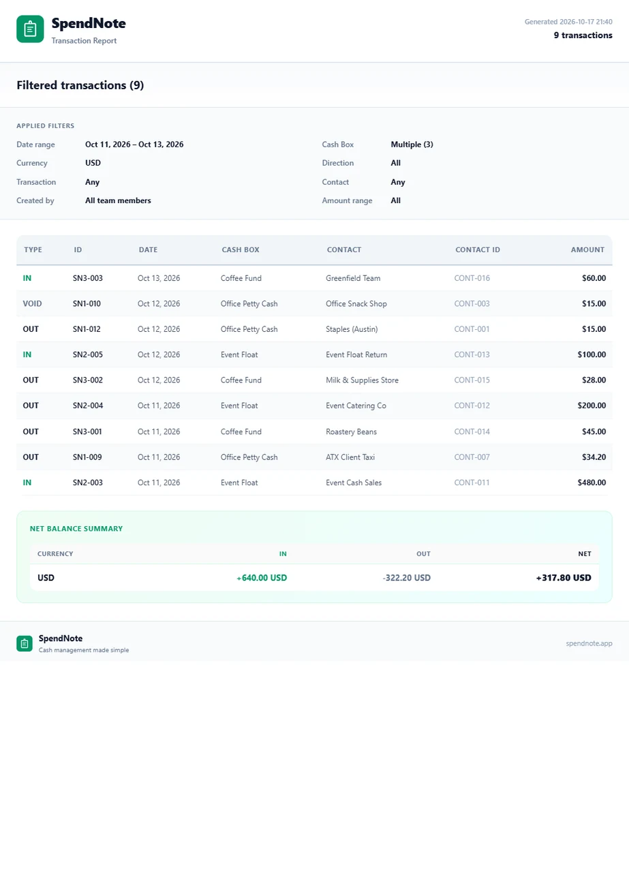

Cash Paid Out Log
Money leaves the cash box every day. If you don't log where it goes, you won't know where it went — until the box is empty and the questions start.

What Is a Cash Paid Out Log
A cash paid out log tracks every outflow from a cash box or register. Unlike a full petty cash log that records both inflows and outflows, a paid out log focuses specifically on disbursements — money leaving the box.
Each entry answers four questions: who received the cash, how much, what for, and when. If a voucher or receipt is attached, the entry is verifiable. If not, it's just a claim.
What Each Entry Should Include
- Date and time of the disbursement
- Amount paid out
- Recipient — who received the cash
- Purpose — what the money was for (office supplies, fuel, meals, etc.)
- Authorized by — who approved the payout
- Receipt or voucher reference — proof that the cash was used as stated
- Running balance — the cash box balance after this disbursement
Common Cash Paid Out Categories
Office Supplies & Materials
Pens, paper, printer ink, cleaning supplies. Small purchases that don't justify a purchase order but still need documenting.
Meals & Per Diems
Staff meals, client lunches, daily cash allowances. These add up quickly and are often the largest category in a paid out log.
Transport & Parking
Fuel, parking fees, taxi fares, delivery charges. Frequent and small, but they drain the cash box fast without logging.
Repairs & Maintenance
Emergency fixes, replacement parts, minor repairs. Often unplanned and paid in cash because a purchase order would take too long.
Every Cash Outflow, Documented
Log each disbursement in seconds. Sign and print a receipt, both sides keep a copy — the log writes itself. Free to start, no credit card.
Create First Paid-Out ReceiptFrom Paper Log to Digital Tracking
A paper cash paid out log works until you need to find a specific entry from last month, total up a category, or prove who authorized a payment. Digital tracking solves all three.

In SpendNote, every OUT transaction is a paid out entry. Each one gets a timestamp, user attribution, and a receipt. At reconciliation time, filter for OUT transactions, export a PDF, and compare to the remaining cash. If the numbers match, you're done.

When it's time to replenish the cash box, the paid out log serves as the supporting documentation — it shows exactly where the money went.
Important: SpendNote is for internal cash tracking and receipt generation. Cash paid out logs in SpendNote are internal documentation — not accounting journal entries, expense reports for tax purposes, or official financial records. Your accounting system handles the formal bookkeeping.
Frequently Asked Questions
What is a cash paid out log?
A cash paid out log is a record of every cash disbursement from a cash box or register. Each entry includes the date, amount, recipient, purpose, and who authorized the payment. It tracks only outflows — money leaving the box.
What's the difference between a cash paid out log and a petty cash log?
A petty cash log records all transactions — both money coming in (replenishments, returns) and money going out (disbursements). A cash paid out log focuses specifically on outflows. In practice, many businesses use a combined log, but separating paid-outs helps when reviewing where money went.
Do I need a receipt for every cash paid out?
Yes, best practice is to document every cash disbursement with a receipt or voucher. The receipt proves the payment happened, who received it, and what it was for. Without receipts, paid-out entries are unverifiable — which is a problem during audits and reconciliation.
How do I track cash paid out in SpendNote?
Every time cash leaves the box, log it as an OUT transaction. Enter the amount, select the recipient, and describe the purpose. SpendNote generates a receipt automatically. You can filter your transaction history to show only OUT transactions — that's your cash paid out log.
Try everything. Pay nothing for 14 days.
Then, if you love it
- Unlimited receipts and cash boxes
- Your logo on every receipt
- Print, PDF & CSV export
- Daily cash report with cash count
Every cash handoff, recorded and signed.
Set up in two minutes. First receipt in thirty seconds. Every entry saved and searchable.
Start my free trial